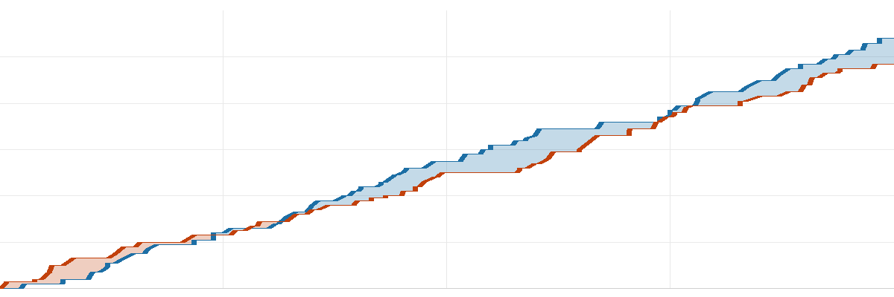

每日战报
2026-11-01美国时间
共 4 场 ｜ 每行格式：客队 比分 : 比分 主队
今天 4 场，最胶着的是凯尔特人 108-97 魔术：交替领先 5 次，打平 4 次，第 4 节还剩 3:59 才把分差拉开到 5 分以上。
焦点球星
东契奇45分15板 6助·湖人 胜 猛龙
库里（未出场）勇士 胜 快船
今日最胶着
| 1 | 2 | 3 | 4 |
| 分节 | 24-23 | 31-27 | 22-24 | 31-23 |

凯尔特人魔术横轴为比赛进程
凯尔特人最多领先 15 分，最终赢 11 分。
| 凯尔特人 | 塔图姆32分4板7助·保罗·乔治17分6板8助·德里克·怀特12分2板2助 |
| 魔术 | Black23分8板3助·Silva23分10板2助·贝恩19分2板1助 |
|
命中率 |
三分 |
篮板 |
助攻 |
失误 |
| 凯尔特人 |
44 | 27 | 41 | 29 | 13 |
| 魔术 |
42 | 36 | 43 | 24 | 18 |
北京 04:30 开球 ｜ 凯尔特人 5-1 ｜ 魔术 2-4
| 1 | 2 | 3 | 4 |
| 分节 | 20-19 | 23-21 | 28-22 | 27-28 |
篮网最多领先 12 分，最终赢 8 分。
| 篮网 | 小波特23分9板3助·兰德尔20分5板6助·Traore16分2板6助 |
| 步行者 | 内姆哈德23分3板4助·西亚卡姆17分5板5助·Jackson12分3板2助 |
|
命中率 |
三分 |
篮板 |
助攻 |
失误 |
| 篮网 |
41 | 33 | 43 | 21 | 18 |
| 步行者 |
40 | 37 | 37 | 21 | 15 |
北京 06:00 开球 ｜ 篮网 1-5 ｜ 步行者 2-5
今日最佳一球
篮网 Sharpe 空中接力扣篮
篮网 98-90 步行者 · 第 4 节 剩 5:59
今日最大逆转
| 1 | 2 | 3 | 4 |
| 分节 | 37-29 | 20-34 | 28-29 | 27-32 |
勇士一度落后 11 分，翻盘赢 12 分。
| 快船 | 八村塁24分7板·Sanders16分3板·加兰15分7助 |
| 勇士 | Lendeborg37分4板6助·Melton21分6板3助·波杰姆斯基17分8板8助 |
|
命中率 |
三分 |
篮板 |
助攻 |
失误 |
| 快船 |
44 | 36 | 42 | 22 | 14 |
| 勇士 |
53 | 45 | 44 | 32 | 15 |
北京 09:30 开球 ｜ 快船 1-5 ｜ 勇士 4-3
今日最功亏一篑
| 1 | 2 | 3 | 4 |
| 分节 | 23-36 | 31-30 | 28-38 | 43-27 |
猛龙末节打出 43-27，但前面落后太多，最终仍差 6 分。
| 猛龙 | 斯科蒂·巴恩斯29分6板5助·巴雷特22分10板5助·Battle20分5板 |
| 湖人 | 东契奇45分15板6助·里夫斯19分3板4助·凯斯勒16分15板1助 |
|
命中率 |
三分 |
篮板 |
助攻 |
失误 |
| 猛龙 |
43 | 31 | 47 | 35 | 15 |
| 湖人 |
54 | 49 | 45 | 26 | 24 |
北京 10:00 开球 ｜ 猛龙 3-3 ｜ 湖人 5-2
明日焦点
雷霆@骑士
北京时间 11月3日 08:00 ｜ 骑士主场
NBCSN 全美直播；两队战绩咬在一起（4胜2负 / 4胜2负）
战绩 4胜2负 / 4胜2负
另外这几场
公牛@76人北京时间 11月3日 08:30
凯尔特人@火箭北京时间 11月3日 09:30
爵士@马刺北京时间 11月3日 09:30
太阳@勇士北京时间 11月3日 11:00
热火@湖人北京时间 11月3日 11:00
开拓者@掘金北京时间 11月3日 10:00
明天全联盟 15 场，这是最值得定闹钟的一场
本文基于公开赛事数据独立撰写，与 NBA 及任何转播平台无关联。
比赛日 2026-11-01（美国时间）｜ 数据来源：ESPN